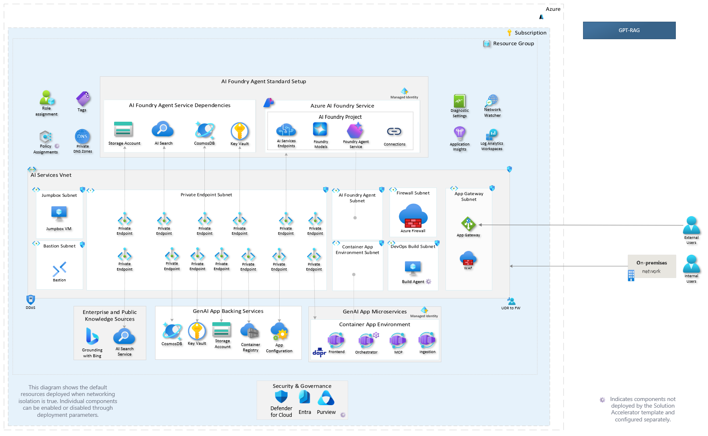
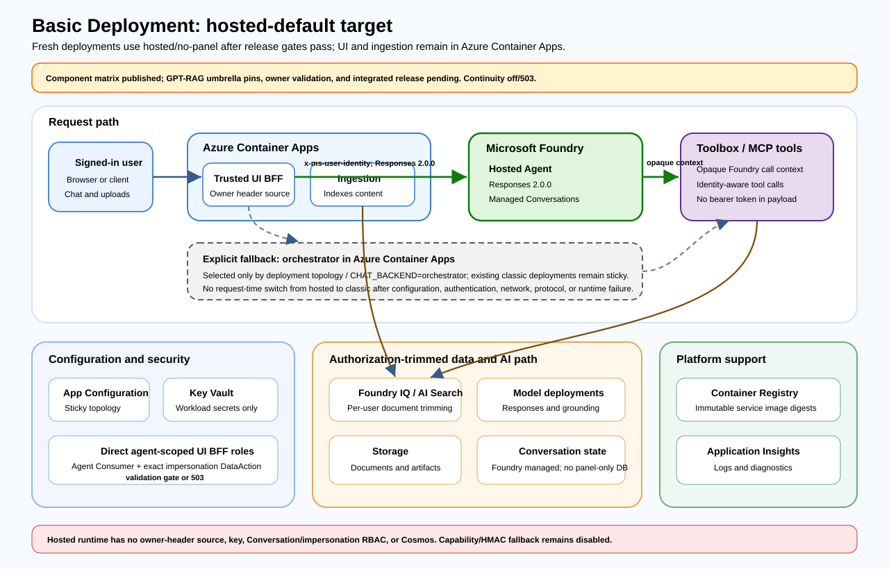
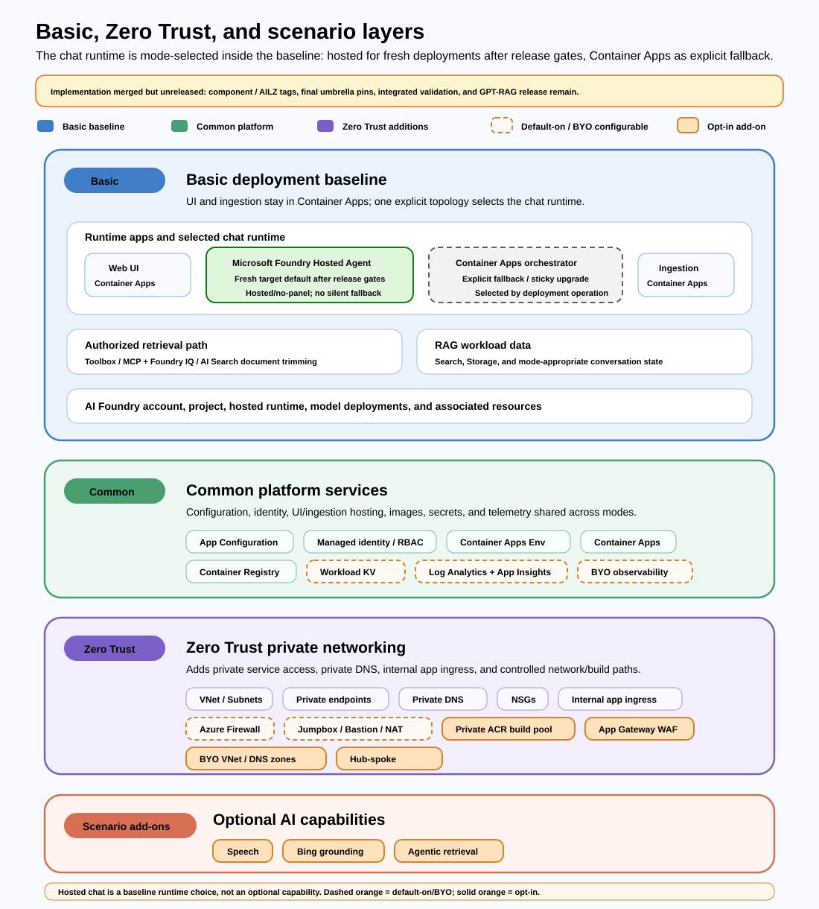

Overview
Architecture
GPT-RAG is modular. The full Zero Trust diagram shows a hardened, full-capability reference architecture; it is not the minimum footprint required to evaluate or run the accelerator. Start with the Basic Deployment baseline, then add network isolation, enterprise integration, public ingress, or AI capabilities only when the scenario requires them.
Full Zero Trust reference
The existing architecture diagram remains the full network-isolated reference view. Use it when discussing hardened deployments, while the complementary diagrams below explain the baseline and optional layers.

Complementary modular views
How to read these diagrams
Solid blue components are part of the basic GPT-RAG deployment path. Green components are recommended/default platform support. Purple and orange components are optional add-ons controlled by deployment parameters.

The baseline corresponds to the Basic Deployment flow with NETWORK_ISOLATION=false. It focuses on the default application and data path: users access the frontend, the orchestrator coordinates AI and retrieval, ingestion indexes enterprise content, and shared platform services provide configuration, secrets, identity, storage, search, and conversation state.

Component matrix
| Layer | Posture | Controlled by | Include when |
|---|---|---|---|
| Frontend, orchestrator, ingestion | Required baseline | manifest.json components and containerAppsList |
Running the default GPT-RAG web, orchestration, and ingestion services. |
| AI Foundry / Azure OpenAI, AI Search, Storage, Cosmos DB | Required for default RAG | deployAiFoundry, modelDeploymentList, deploySearchService, deployStorageAccount, deployCosmosDb |
Running the standard RAG experience with indexed content, conversations, prompts, and model deployments. |
| App Configuration, Key Vault, managed identity / RBAC | Required platform baseline | deployAppConfig, deployKeyVault, useUAI, service role lists |
Centralizing runtime settings and secrets without hard-coded credentials. |
| Container Apps, Container Registry | Required for service deployment | deployContainerApps, deployContainerEnv, deployContainerRegistry |
Hosting and deploying the GPT-RAG runtime services. |
| Log Analytics and Application Insights | Recommended/default support | deployLogAnalytics, deployAppInsights, EXISTING_LOG_ANALYTICS_WORKSPACE_RESOURCE_ID, EXISTING_APPLICATION_INSIGHTS_RESOURCE_ID |
Capturing diagnostics and app telemetry, or reusing enterprise observability. |
| Zero Trust networking | Optional security add-on | NETWORK_ISOLATION=true, allowedIpRanges, Private DNS settings |
Requiring private endpoints, private DNS, VNet integration, NSGs, and controlled public access. |
| Jumpbox, Bastion, NAT Gateway, ACR Task Agent Pool, Azure Firewall | Optional operations/build layer | DEPLOY_JUMPBOX, DEPLOY_BASTION, DEPLOY_NAT_GATEWAY, DEPLOY_ACR_TASK_AGENT_POOL, DEPLOY_AZURE_FIREWALL |
Operating from inside the VNet, building images privately, or controlling egress in isolated deployments. |
| Application Gateway WAF public ingress | Optional entry layer | publicIngress.enabled |
Exposing one private Container App through controlled public HTTPS/WAF. See Application Gateway. |
| Existing platform / AI Landing Zone integration | Optional enterprise integration | DEPLOYMENT_MODE=ailz-integrated, USE_EXISTING_VNET, EXISTING_*_RESOURCE_ID, HUB_INTEGRATION_* |
Reusing central network, DNS, observability, Bastion, NAT, or hub-spoke resources. |
| Scenario capabilities | Optional feature add-ons | DEPLOY_SPEECH_SERVICE, DEPLOY_GROUNDING_WITH_BING, ENABLE_AGENTIC_RETRIEVAL, DEPLOY_POSTGRES, DEPLOY_MCP |
Enabling voice, Bing grounding, agentic retrieval, NL2SQL/PostgreSQL, or MCP/tool-hosting scenarios. |
Key Capabilities
-
Enterprise-Grade Security
Optional Zero Trust architecture with private endpoints, Azure Key Vault integration, and comprehensive monitoring. -
Flexible & Customizable
Modular design with customizable orchestration, multiple interface options, and bring-your-own-resources support. -
Multimodal Experience
Native support for text, images, and voice with SharePoint and Fabric connectors for seamless data integration. -
Production Ready
Enterprise-ready infrastructure with support for CI/CD pipelines and quality evaluation integration.